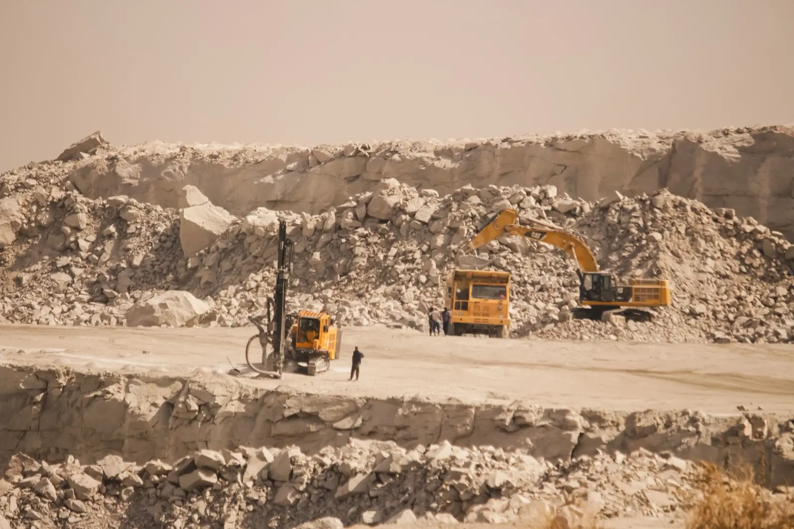

Target market

Mining
A target market for Koke Holdings. Our documented experience is public-sector skills development programme management; mining is where we are positioned to apply it.
The challenge
Mining right holders balance Social and Labour Plan (SLP) commitments, Mining Charter obligations, local skills needs and community expectations — and must be able to evidence results to auditors and regulators.
How Koke helps
Our six-phase approach — define, mobilise, procure and contract, implement, build capacity, monitor and evaluate — applies to mining and industry programmes as it does to public-sector work.
See the six-phase approach →- ✓Skills development programmes that support Social and Labour Plan (SLP) commitments
- ✓Learnerships, internships and artisan pathways aligned to Mining Qualifications Authority (MQA) accredited training
- ✓Community and portable-skills programmes in mining-affected districts
- ✓Compliance, quality management, monitoring and reporting suitable for audit by mining right holders and the Department of Mineral and Petroleum Resources
- ✓Stakeholder coordination between mines, municipalities, training providers and communities

Drill rig and excavator loading a haul truck at a limestone quarry" width="1600" height="1066" loading="lazy" decoding="async" class="w-full h-48 md:h-64 object-cover rounded-xl border border-neutral-200/80 dark:border-neutral-800">Public sector and beyond
Government departments, municipalities, state-owned entities, accredited training providers and host workplaces remain our core client base.